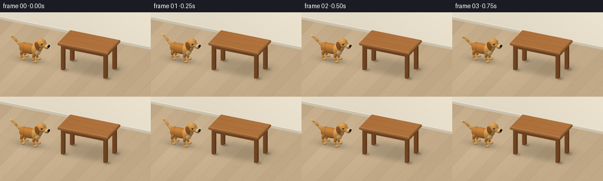
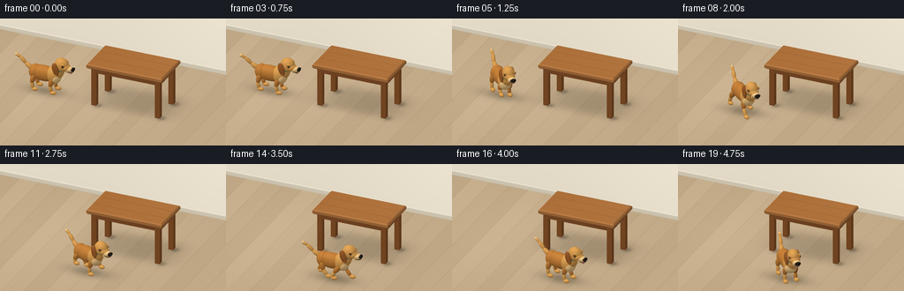

CODING AGENTS AS PIXEL WORLD MODELS
traex/GPT-6.1-Sol · dynamic_spatial_relationship_0000
点击播放 · 原生 RGB 像素
逐轮保存的候选
回放视频、检查图与代码变化。
每份候选均可单独播放。实际图片检查记录在下方工具轨迹中。
候选 01播放与检查图
点击播放 · 原生 RGB 像素


展开代码变化
--- 上一保存版本
+++ 本次保存版本
@@ -0,0 +1,274 @@
+"""Deterministic, text-only RGB animation using a small numpy triangle renderer."""
+from pathlib import Path
+import math
+import numpy as np
+from PIL import Image
+import artifact_io
+
+ROOT=Path(__file__).resolve().parent
+W,H,S=256,144,3
+WW,HH=W*S,H*S
+# Fixed orthographic camera, looking toward the back of the room.
+cam=np.array([3.6,-8.,5.4]); target=np.array([0.,.15,.8])
+forward=(target-cam); forward/=np.linalg.norm(forward)
+right=np.cross(forward,[0,0,1.]); right/=np.linalg.norm(right)
+up=np.cross(right,forward)
+SCALE=31.5*S
+CENTER=np.array([128*S,78*S])
+light=np.array([-.45,-.65,1.]); light/=np.linalg.norm(light)
+
+
+def project(v):
+ q=np.asarray(v)-target
+ return np.stack([q@right*SCALE+CENTER[0],-q@up*SCALE+CENTER[1],q@forward],axis=-1)
+
+class Scene:
+ def __init__(self): self.items=[]
+ def mesh(self,v,n,f,color,material=0):
+ self.items.append((np.asarray(v),np.asarray(n),np.asarray(f,dtype=np.int32),np.array(color,float),material))
+ def ellipsoid(self,p,r,color,rot=None,nu=24,nv=14,material=0):
+ # Sphere parameterization with true ellipsoid normals.
+ a=np.linspace(0,2*np.pi,nu,endpoint=False); b=np.linspace(.001,np.pi-.001,nv+1)
+ bb,aa=np.meshgrid(b,a,indexing='ij')
+ q=np.stack([np.sin(bb)*np.cos(aa),np.sin(bb)*np.sin(aa),np.cos(bb)],-1).reshape(-1,3)
+ r=np.array(r); v=q*r; n=q/r; n/=np.linalg.norm(n,axis=1)[:,None]
+ if rot is not None: v=v@rot.T; n=n@rot.T
+ v+=p
+ f=[]
+ for j in range(nv):
+ for i in range(nu):
+ k=j*nu+i; k1=j*nu+(i+1)%nu
+ f.extend([(k,k1,k+nu),(k1,k1+nu,k+nu)])
+ self.mesh(v,n,f,color,material)
+ def capsule(self,a,b,r1,r2,color,material=0):
+ a=np.array(a); b=np.array(b); d=b-a; length=np.linalg.norm(d); z=d/length
+ cross=np.cross(z,[0,0,1.])
+ if np.linalg.norm(cross)<.01: cross=np.cross(z,[0,1.,0])
+ x=cross/np.linalg.norm(cross); y=np.cross(z,x)
+ rot=np.stack([x,y,z],axis=1)
+ self.ellipsoid((a+b)/2,[max(r1,r2),max(r1,r2),length/2+min(r1,r2)*.7],color,rot,18,12,material)
+ def box(self,lo,hi,color,material=0):
+ lo=np.array(lo); hi=np.array(hi)
+ vv=[]; nn=[]; ff=[]
+ for axis in range(3):
+ other=[i for i in range(3) if i!=axis]
+ for side in (0,1):
+ start=len(vv); n=np.zeros(3); n[axis]=2*side-1
+ for u,v in [(0,0),(1,0),(1,1),(0,1)]:
+ p=lo.copy(); p[axis]=hi[axis] if side else lo[axis]; p[other[0]]=hi[other[0]] if u else lo[other[0]]; p[other[1]]=hi[other[1]] if v else lo[other[1]]
+ vv.append(p); nn.append(n)
+ ff.extend([(start,start+1,start+2),(start,start+2,start+3)])
+ self.mesh(vv,nn,ff,color,material)
+ def bevel_box(self,lo,hi,bevel,color,material=0):
+ # Horizontal beveled top board, with a clean highlight around the rim.
+ x0,y0,z0=lo; x1,y1,z1=hi; b=bevel
+ rings=[]
+ for xlo,xhi,ylo,yhi,z in [(x0+b,x1-b,y0+b,y1-b,z0),(x0,x1,y0,y1,z0+b),(x0,x1,y0,y1,z1-b),(x0+b,x1-b,y0+b,y1-b,z1)]:
+ rings.append([[xlo,ylo,z],[xhi,ylo,z],[xhi,yhi,z],[xlo,yhi,z]])
+ verts=[]; norms=[]; faces=[]
+ def quad(v):
+ st=len(verts); v=np.array(v); n=np.cross(v[1]-v[0],v[2]-v[0]); n/=np.linalg.norm(n)
+ verts.extend(v); norms.extend([n]*4); faces.extend([(st,st+1,st+2),(st,st+2,st+3)])
+ quad(rings[3]); quad(rings[0][::-1])
+ for j in range(3):
+ for i in range(4): quad([rings[j][i],rings[j][(i+1)%4],rings[j+1][(i+1)%4],rings[j+1][i]])
+ self.mesh(verts,norms,faces,color,material)
+
+# Rays for a seamless room floor / back wall.
+yy,xx=np.mgrid[0:HH,0:WW]
+base=target+((xx-CENTER[0])/SCALE)[...,None]*right+((CENTER[1]-yy)/SCALE)[...,None]*up
+floor_t=-base[:,:,2]/forward[2]
+floor=base+floor_t[:,:,None]*forward
+wall_t=(4.1-base[:,:,1])/forward[1]
+wall=base+wall_t[:,:,None]*forward
+floor_mask=floor_t<wall_t
+fx,fy=floor[:,:,0],floor[:,:,1]
+
+
+def background(x,y):
+ # Light oak boards running front-to-back, with subtle grain and joins.
+ board=np.floor((fx+.25)/.74)
+ variation=3*np.sin(board*4.23)+1.5*np.cos(board*8.11)
+ grain=1.2*np.sin(fx*93+np.sin(fy*2.9)*1.2)+.9*np.sin(fx*177+fy*.5)
+ seam=np.exp(-(np.minimum(np.mod(fx+.25,.74),.74-np.mod(fx+.25,.74))/.012)**2)
+ cross=np.exp(-(np.minimum(np.mod(fy+board*.92,3.3),3.3-np.mod(fy+board*.92,3.3))/.012)**2)
+ val=variation+grain-12*seam-6*cross
+ col=np.zeros((HH,WW,3))+np.array([193,169,135])+val[...,None]
+ # Gentle window light across the floor.
+ illum=8*np.exp(-((fx+2.2)/3.2)**2-((fy-.4)/4)**2)
+ col+=illum[...,None]
+ shadow=.16*np.exp(-((fx-.65)/1.62)**4-((fy-.9)/.95)**4)
+ for lx in (-.65,1.85):
+ for ly in (.0,1.2):
+ shadow+=.24*np.exp(-((fx-lx-.10)/.16)**2-((fy-ly-.05)/.17)**2)
+ # Moving dog contact shadow (no baked-in silhouette).
+ shadow+=.27*np.exp(-((fx-x)/.75)**2-((fy-y)/.37)**2)
+ col*=1-shadow[...,None]
+ z=wall[:,:,2]
+ wallcol=np.zeros_like(col)+[228,220,201]
+ wallcol+=(3*np.sin(wall[:,:,0]*.45)+z*1.8)[...,None]
+ # Painted skirting with a thin bevel.
+ sk=z<.18
+ wallcol[sk]=np.array([206,197,177])
+ rim=(z>.16)&(z<.195)
+ wallcol[rim]=[239,232,212]
+ wallcol-=8*np.exp(-z/.07)[...,None]
+ col=np.where(floor_mask[...,None],col,wallcol)
+ return np.clip(col,0,255).astype(np.float32)
+
+
+def render(scene,img):
+ zbuffer=np.full((HH,WW),np.inf,dtype=np.float32)
+ for verts,normals,faces,color,mat in scene.items:
+ points=project(verts)
+ diffuse=np.maximum(normals@light,0)
+ half=light-forward; half/=np.linalg.norm(half)
+ spec=np.maximum(normals@half,0)**(30 if mat==2 else 16)
+ ambient=.67+.11*normals[:,2]
+ shade=ambient+.30*diffuse
+ colors=color[None,:]*shade[:,None]+spec[:,None]*(20 if mat==2 else 8)
+ if mat==1: # warm timber: longitudinal grain on every face
+ grain=np.sin(verts[:,0]*25+np.sin(verts[:,1]*10)*.55)
+ colors+=grain[:,None]*3
+ if mat==0:
+ noise=np.sin(verts[:,0]*73+verts[:,1]*81+verts[:,2]*41)*np.sin(verts[:,2]*93-verts[:,1]*37)
+ colors+=noise[:,None]*1.9
+ for face in faces:
+ p=points[face]; c=colors[face]
+ minx=max(0,int(np.floor(p[:,0].min()))); maxx=min(WW-1,int(np.ceil(p[:,0].max())))
+ miny=max(0,int(np.floor(p[:,1].min()))); maxy=min(HH-1,int(np.ceil(p[:,1].max())))
+ if minx>maxx or miny>maxy: continue
+ ax,ay=p[0,:2]; bx,by=p[1,:2]; cx,cy=p[2,:2]
+ den=(by-cy)*(ax-cx)+(cx-bx)*(ay-cy)
+ if abs(den)<1e-6: continue
+ gx,gy=np.meshgrid(np.arange(minx,maxx+1)+.5,np.arange(miny,maxy+1)+.5)
+ a=((by-cy)*(gx-cx)+(cx-bx)*(gy-cy))/den
+ b=((cy-ay)*(gx-cx)+(ax-cx)*(gy-cy))/den
+ cc=1-a-b
+ depth=a*p[0,2]+b*p[1,2]+cc*p[2,2]
+ zz=zbuffer[miny:maxy+1,minx:maxx+1]
+ mask=(a>=-1e-5)&(b>=-1e-5)&(cc>=-1e-5)&(depth<zz)
+ if not mask.any(): continue
+ rgb=a[...,None]*c[0]+b[...,None]*c[1]+cc[...,None]*c[2]
+ patch=img[miny:maxy+1,minx:maxx+1]
+ patch[mask]=rgb[mask]; zz[mask]=depth[mask]
+ return Image.fromarray(np.uint8(np.clip(img,0,255))).resize((W,H),Image.Resampling.LANCZOS)
+
+
+def furniture(scene):
+ wood=[139,85,43]
+ # Four individual legs, with tapered lower portions.
+ for x in (-.65,1.85):
+ for y in (0.,1.2):
+ scene.bevel_box([x-.095,y-.095,.035],[x+.095,y+.095,1.58],.02,wood,1)
+ scene.box([-.72,-.06,1.35],[1.92,.06,1.59],[131,78,40],1)
+ scene.box([-.72,1.14,1.35],[1.92,1.26,1.59],[131,78,40],1)
+ scene.box([-.72,.04,1.35],[-.60,1.17,1.59],[131,78,40],1)
+ scene.box([1.80,.04,1.35],[1.92,1.17,1.59],[131,78,40],1)
+ scene.bevel_box([-.88,-.23,1.55],[2.08,1.43,1.74],.045,[172,112,59],1)
+ # Fine long board joins in the tabletop, restrained detail rather than clutter.
+ for y in (.30,.88):
+ scene.box([-.81,y,1.741],[2.01,y+.008,1.744],[148,93,48],1)
+
+
+def dog(scene,x,y,yaw,t,running,settle):
+ cs,sn=np.cos(yaw),np.sin(yaw)
+ R=np.array([[cs,-sn,0],[sn,cs,0],[0,0,1.]])
+ bob=.045*np.sin(t*2*np.pi*2.0) if running else .006*np.sin(t*3)
+ origin=np.array([x,y,bob])
+ def P(v):return np.array(v)@R.T+origin
+ def ell(p,r,c,rot=None,nu=24,nv=14,material=0):scene.ellipsoid(P(p),r,c,R if rot is None else R@rot,nu,nv,material)
+ def cap(a,b,r1,r2,c):scene.capsule(P(a),P(b),r1,r2,c)
+ gold=[190,123,54]; bright=[214,155,79]; cream=[232,191,128]; dark=[152,90,40]
+ # Far-side legs first, articulated running gallop.
+ phase=t*2*np.pi*1.65
+ for side in (1,-1):
+ for front in (False,True):
+ hipx=.34 if front else -.39
+ offset=(0 if front else np.pi*.85)+(0 if side==-1 else np.pi)
+ wave=np.sin(phase+offset) if running else 0
+ lift=max(0,np.cos(phase+offset))*.19 if running else 0
+ shoulder=[hipx,side*.18,.64 if front else .65]
+ knee=[hipx-.08+.14*wave,side*.20,.35+lift*.45]
+ foot=[hipx+.27*wave,side*.21,.095+lift-bob]
+ cap(shoulder,knee,.10,.08,gold if side==-1 else dark)
+ cap(knee,[foot[0]-.035,foot[1],foot[2]+.015],.07,.065,bright if side==-1 else gold)
+ ell([foot[0]+.035,foot[1],foot[2]],[.135,.084,.073],bright)
+ # Discrete toe grooves, tiny but make the foot silhouette canine.
+ if side==-1:
+ for toe in (-.024,.024):ell([foot[0]+.135,foot[1]+toe,foot[2]-.006],[.012,.005,.025],[170,111,54],nu=10,nv=7)
+ ell([-.08,0,.70],[.58,.25,.30],gold,nu=32,nv=20)
+ ell([-.42,0,.70],[.24,.253,.285],gold)
+ ell([.32,0,.73],[.29,.275,.33],bright)
+ ell([.42,-.025,.66],[.18,.24,.24],cream)
+ # Upward curved wagging tail, built as a smooth chain of tapered fur sections.
+ wag=.15*np.sin(t*7.0)
+ tail=[[-.53,.0,.78],[-.80,wag*.35,.94],[-1.02,wag*.7,1.15],[-1.18,wag,1.22]]
+ for j in range(3):cap(tail[j],tail[j+1],.09-j*.017,.075-j*.018,bright)
+ ell(tail[-1],[.064,.063,.064],cream)
+ ell([.48,0,.93],[.235,.22,.30],bright)
+ # A teal collar visible around the neck, with a little brass tag.
+ ell([.48,0,.99],[.241,.226,.077],[30,115,113],nu=32,nv=12,material=2)
+ ell([.55,-.227,.915],[.045,.016,.06],[224,179,73],material=2)
+ nod=.015*np.sin(t*9) if running else .0
+ hz=1.18+nod
+ ell([.63,0,hz],[.275,.218,.276],bright,nu=32,nv=20)
+ # Floppy ears with a soft dark interior at each side.
+ tilt=.12*np.sin(t*10) if running else .03*np.sin(t*4)
+ for side in (1,-1):
+ angle=-.28+tilt
+ rr=np.array([[np.cos(angle),0,np.sin(angle)],[0,1,0],[-np.sin(angle),0,np.cos(angle)]])
+ ell([.48,side*.217,hz-.11],[.127,.079,.248],dark,rr)
+ ell([.505,side*.266,hz-.17],[.075,.015,.151],[169,103,45],rr)
+ # Cheeks and a long, cream-colored retriever muzzle.
+ ell([.78,0,hz-.055],[.19,.184,.15],bright)
+ ell([.89,0,hz-.10],[.225,.146,.115],cream)
+ # Lower jaw / mouth seam and black nose.
+ ell([.94,0,hz-.176],[.16,.124,.022],[76,49,30])
+ ell([.895,0,hz-.195],[.18,.126,.044],cream)
+ ell([1.077,0,hz-.078],[.065,.113,.065],[36,31,27],nu=24,nv=16,material=2)
+ ell([1.11,-.040,hz-.060],[.012,.026,.011],[101,94,83],material=2)
+ for side in (-1,1):
+ ell([.747,side*.183,hz+.056],[.068,.038,.065],gold)
+ ell([.762,side*.206,hz+.049],[.043,.026,.043],[41,29,21],material=2)
+ ell([.78,side*.223,hz+.065],[.012,.009,.012],[245,242,222],nu=12,nv=8,material=2)
+ ell([.75,side*.184,hz+.115],[.065,.034,.022],bright)
+ if not running or settle>0:
+ ell([1.00,-.015,hz-.215],[.055,.060,.043],[202,108,105],nu=18,nv=12)
+
+
+def smooth(u):return u*u*(3-2*u)
+
+def state(i):
+ t=i/4
+ # Establish the spatial relationship, run across the foreground, then hold.
+ if t<=.75:return -2.72,.35,-.04,False,0
+ if t<3.75:
+ u=(t-.75)/3.
+ # A curved path past the table's left front corner and into the foreground.
+ q=smooth(u)
+ x=-2.72+3.42*q
+ y=.35-2.10*(np.sin(q*np.pi/2))
+ dx=3.42; dy=-2.10*np.pi/2*np.cos(q*np.pi/2)
+ yaw=math.atan2(dy,dx)
+ return x,y,yaw,True,0
+ a=smooth(min(1,(t-3.75)/.75))
+ return .70,-1.75,-.05-.75*a,False,a
+
+
+def main():
+ frames=[]
+ for i in range(20):
+ x,y,yaw,running,settle=state(i)
+ scene=Scene(); furniture(scene); dog(scene,x,y,yaw,i/4,running,settle)
+ im=render(scene,background(x,y))
+ frames.append(np.array(im.convert('RGB'),dtype=np.uint8))
+ print(f'frame {i:02d} ready',flush=True)
+ artifact_io.save(np.stack(frames),ROOT)
+ # Supplemental universally playable preview, alongside the required RGB tensor.
+ try:
+ import imageio.v2 as imageio
+ imageio.mimsave(ROOT/'video.mp4',frames,fps=4,macro_block_size=1,codec='libx264',quality=8)
+ except Exception as exc: print('Optional MP4:',exc)
+
+if __name__=='__main__':main()
可观测工具轨迹
实际执行的命令与返回图片。
命令 1exit 0
/bin/bash -lc "ls -la && cat prompt.txt && printf '\\n--- RULES ---\\n' && cat GENERATION_RULES.md && printf '\\n--- SPEC ---\\n' && cat task_spec.json"
命令 2exit 0
/bin/bash -lc 'cat artifact_io.py && fc-list | head -3'
命令 3exit 0
/bin/bash -lc "python - <<'PY' import importlib.util for x in ['numpy','PIL','numba','scipy','imageio','imageio_ffmpeg']: print(x, bool(importlib.util.find_spec(x))) PY"
命令 4exit 0
/bin/bash -lc "cat > generate.py <<'PY'
\"\"\"Deterministic, text-only RGB animation using a small numpy triangle renderer.\"\"\"
from pathlib import Path
import math
import numpy as np
from PIL import Image
import artifact_io
ROOT=Path(__file__).resolve().parent
W,H,S=256,144,3
WW,HH=W*S,H*S
# Fixed orthographic camera, looking toward the back of the room.
cam=np.array([3.6,-8.,5.4]); target=np.array([0.,.15,.8])
forward=(target-cam); forward/=np.linalg.norm(forward)
right=np.cross(forward,[0,0,1.]); right/=np.linalg.norm(right)
up=np.cross(right,forward)
SCALE=31.5*S
CENTER=np.array([128*S,78*S])
light=np.array([-.45,-.65,1.]); light/=np.linalg.norm(light)
def project(v):
q=np.asarray(v)-target
return np.stack([q@right*SCALE+CENTER[0],-q@up*SCALE+CENTER[1],q@forward],axis=-1)
class Scene:
def __init__(self): self.items=[]
def mesh(self,v,n,f,color,material=0):
self.items.append((np.asarray(v),np.asarray(n),np.asarray(f,dtype=np.int32),np.array(color,float),material))
def ellipsoid(self,p,r,color,rot=None,nu=24,nv=14,material=0):
# Sphere parameterization with true ellipsoid normals.
a=np.linspace(0,2*np.pi,nu,endpoint=False); b=np.linspace(.001,np.pi-.001,nv+1)
bb,aa=np.meshgrid(b,a,indexing='ij')
q=np.stack([np.sin(bb)*np.cos(aa),np.sin(bb)*np.sin(aa),np.cos(bb)],-1).reshape(-1,3)
r=np.array(r); v=q*r; n=q/r; n/=np.linalg.norm(n,axis=1)[:,None]
if rot is not None: v=v@rot.T; n=n@rot.T
v+=p
f=[]
for j in range(nv):
for i in range(nu):
k=j*nu+i; k1=j*nu+(i+1)%nu
f.extend([(k,k1,k+nu),(k1,k1+nu,k+nu)])
self.mesh(v,n,f,color,material)
def capsule(self,a,b,r1,r2,color,material=0):
a=np.array(a); b=np.array(b); d=b-a; length=np.linalg.norm(d); z=d/length
cross=np.cross(z,[0,0,1.])
if np.linalg.norm(cross)<.01: cross=np.cross(z,[0,1.,0])
x=cross/np.linalg.norm(cross); y=np.cross(z,x)
rot=np.stack([x,y,z],axis=1)
self.ellipsoid((a+b)/2,[max(r1,r2),max(r1,r2),length/2+min(r1,r2)*.7],color,rot,18,12,material)
def box(self,lo,hi,color,material=0):
lo=np.array(lo); hi=np.array(hi)
vv=[]; nn=[]; ff=[]
for axis in range(3):
other=[i for i in range(3) if i"'!=axis]
for side in (0,1):
start=len(vv); n=np.zeros(3); n[axis]=2*side-1
for u,v in [(0,0),(1,0),(1,1),(0,1)]:
p=lo.copy(); p[axis]=hi[axis] if side else lo[axis]; p[other[0]]=hi[other[0]] if u else lo[other[0]]; p[other[1]]=hi[other[1]] if v else lo[other[1]]
vv.append(p); nn.append(n)
ff.extend([(start,start+1,start+2),(start,start+2,start+3)])
self.mesh(vv,nn,ff,color,material)
def bevel_box(self,lo,hi,bevel,color,material=0):
# Horizontal beveled top board, with a clean highlight around the rim.
x0,y0,z0=lo; x1,y1,z1=hi; b=bevel
rings=[]
for xlo,xhi,ylo,yhi,z in [(x0+b,x1-b,y0+b,y1-b,z0),(x0,x1,y0,y1,z0+b),(x0,x1,y0,y1,z1-b),(x0+b,x1-b,y0+b,y1-b,z1)]:
rings.append([[xlo,ylo,z],[xhi,ylo,z],[xhi,yhi,z],[xlo,yhi,z]])
verts=[]; norms=[]; faces=[]
def quad(v):
st=len(verts); v=np.array(v); n=np.cross(v[1]-v[0],v[2]-v[0]); n/=np.linalg.norm(n)
verts.extend(v); norms.extend([n]*4); faces.extend([(st,st+1,st+2),(st,st+2,st+3)])
quad(rings[3]); quad(rings[0][::-1])
for j in range(3):
for i in range(4): quad([rings[j][i],rings[j][(i+1)%4],rings[j+1][(i+1)%4],rings[j+1][i]])
self.mesh(verts,norms,faces,color,material)
# Rays for a seamless room floor / back wall.
yy,xx=np.mgrid[0:HH,0:WW]
base=target+((xx-CENTER[0])/SCALE)[...,None]*right+((CENTER[1]-yy)/SCALE)[...,None]*up
floor_t=-base[:,:,2]/forward[2]
floor=base+floor_t[:,:,None]*forward
wall_t=(4.1-base[:,:,1])/forward[1]
wall=base+wall_t[:,:,None]*forward
floor_mask=floor_t<wall_t
fx,fy=floor[:,:,0],floor[:,:,1]
def background(x,y):
# Light oak boards running front-to-back, with subtle grain and joins.
board=np.floor((fx+.25)/.74)
variation=3*np.sin(board*4.23)+1.5*np.cos(board*8.11)
grain=1.2*np.sin(fx*93+np.sin(fy*2.9)*1.2)+.9*np.sin(fx*177+fy*.5)
seam=np.exp(-(np.minimum(np.mod(fx+.25,.74),.74-np.mod(fx+.25,.74))/.012)**2)
cross=np.exp(-(np.minimum(np.mod(fy+board*.92,3.3),3.3-np.mod(fy+board*.92,3.3))/.012)**2)
val=variation+grain-12*seam-6*cross
col=np.zeros((HH,WW,3))+np.array([193,169,135])+val[...,None]
# Gentle window light across the floor.
illum=8*np.exp(-((fx+2.2)/3.2)**2-((fy-.4)/4)**2)
col+=illum[...,None]
shadow=.16*np.exp(-((fx-.65)/1.62)**4-((fy-.9)/.95)**4)
for lx in (-.65,1.85):
for ly in (.0,1.2):
shadow+=.24*np.exp(-((fx-lx-.10)/.16)**2-((fy-ly-.05)/.17)**2)
# Moving dog contact shadow (no baked-in silhouette).
shadow+=.27*np.exp(-((fx-x)/.75)**2-((fy-y)/.37)**2)
col*=1-shadow[...,None]
z=wall[:,:,2]
wallcol=np.zeros_like(col)+[228,220,201]
wallcol+=(3*np.sin(wall[:,:,0]*.45)+z*1.8)[...,None]
# Painted skirting with a thin bevel.
sk=z<.18
wallcol[sk]=np.array([206,197,177])
rim=(z>.16)&(z<.195)
wallcol[rim]=[239,232,212]
wallcol-=8*np.exp(-z/.07)[...,None]
col=np.where(floor_mask[...,None],col,wallcol)
return np.clip(col,0,255).astype(np.float32)
def render(scene,img):
zbuffer=np.full((HH,WW),np.inf,dtype=np.float32)
for verts,normals,faces,color,mat in scene.items:
points=project(verts)
diffuse=np.maximum(normals@light,0)
half=light-forward; half/=np.linalg.norm(half)
spec=np.maximum(normals@half,0)**(30 if mat==2 else 16)
ambient=.67+.11*normals[:,2]
shade=ambient+.30*diffuse
colors=color[None,:]*shade[:,None]+spec[:,None]*(20 if mat==2 else 8)
if mat==1: # warm timber: longitudinal grain on every face
grain=np.sin(verts[:,0]*25+np.sin(verts[:,1]*10)*.55)
colors+=grain[:,None]*3
if mat==0:
noise=np.sin(verts[:,0]*73+verts[:,1]*81+verts[:,2]*41)*np.sin(verts[:,2]*93-verts[:,1]*37)
colors+=noise[:,None]*1.9
for face in faces:
p=points[face]; c=colors[face]
minx=max(0,int(np.floor(p[:,0].min()))); maxx=min(WW-1,int(np.ceil(p[:,0].max())))
miny=max(0,int(np.floor(p[:,1].min()))); maxy=min(HH-1,int(np.ceil(p[:,1].max())))
if minx>maxx or miny>maxy: continue
ax,ay=p[0,:2]; bx,by=p[1,:2]; cx,cy=p[2,:2]
den=(by-cy)*(ax-cx)+(cx-bx)*(ay-cy)
if abs(den)<1e-6: continue
gx,gy=np.meshgrid(np.arange(minx,maxx+1)+.5,np.arange(miny,maxy+1)+.5)
a=((by-cy)*(gx-cx)+(cx-bx)*(gy-cy))/den
b=((cy-ay)*(gx-cx)+(ax-cx)*(gy-cy))/den
cc=1-a-b
depth=a*p[0,2]+b*p[1,2]+cc*p[2,2]
zz=zbuffer[miny:maxy+1,minx:maxx+1]
mask=(a>=-1e-5)&(b>=-1e-5)&(cc>=-1e-5)&(depth<zz)
if not mask.any(): continue
rgb=a[...,None]*c[0]+b[...,None]*c[1]+cc[...,None]*c[2]
patch=img[miny:maxy+1,minx:maxx+1]
patch[mask]=rgb[mask]; zz[mask]=depth[mask]
return Image.fromarray(np.uint8(np.clip(img,0,255))).resize((W,H),Image.Resampling.LANCZOS)
def furniture(scene):
wood=[139,85,43]
# Four individual legs, with tapered lower portions.
for x in (-.65,1.85):
for y in (0.,1.2):
scene.bevel_box([x-.095,y-.095,.035],[x+.095,y+.095,1.58],.02,wood,1)
scene.box([-.72,-.06,1.35],[1.92,.06,1.59],[131,78,40],1)
scene.box([-.72,1.14,1.35],[1.92,1.26,1.59],[131,78,40],1)
scene.box([-.72,.04,1.35],[-.60,1.17,1.59],[131,78,40],1)
scene.box([1.80,.04,1.35],[1.92,1.17,1.59],[131,78,40],1)
scene.bevel_box([-.88,-.23,1.55],[2.08,1.43,1.74],.045,[172,112,59],1)
# Fine long board joins in the tabletop, restrained detail rather than clutter.
for y in (.30,.88):
scene.box([-.81,y,1.741],[2.01,y+.008,1.744],[148,93,48],1)
def dog(scene,x,y,yaw,t,running,settle):
cs,sn=np.cos(yaw),np.sin(yaw)
R=np.array([[cs,-sn,0],[sn,cs,0],[0,0,1.]])
bob=.045*np.sin(t*2*np.pi*2.0) if running else .006*np.sin(t*3)
origin=np.array([x,y,bob])
def P(v):return np.array(v)@R.T+origin
def ell(p,r,c,rot=None,nu=24,nv=14,material=0):scene.ellipsoid(P(p),r,c,R if rot is None else R@rot,nu,nv,material)
def cap(a,b,r1,r2,c):scene.capsule(P(a),P(b),r1,r2,c)
gold=[190,123,54]; bright=[214,155,79]; cream=[232,191,128]; dark=[152,90,40]
# Far-side legs first, articulated running gallop.
phase=t*2*np.pi*1.65
for side in (1,-1):
for front in (False,True):
hipx=.34 if front else -.39
offset=(0 if front else np.pi*.85)+(0 if side==-1 else np.pi)
wave=np.sin(phase+offset) if running else 0
lift=max(0,np.cos(phase+offset))*.19 if running else 0
shoulder=[hipx,side*.18,.64 if front else .65]
knee=[hipx-.08+.14*wave,side*.20,.35+lift*.45]
foot=[hipx+.27*wave,side*.21,.095+lift-bob]
cap(shoulder,knee,.10,.08,gold if side==-1 else dark)
cap(knee,[foot[0]-.035,foot[1],foot[2]+.015],.07,.065,bright if side==-1 else gold)
ell([foot[0]+.035,foot[1],foot[2]],[.135,.084,.073],bright)
# Discrete toe grooves, tiny but make the foot silhouette canine.
if side==-1:
for toe in (-.024,.024):ell([foot[0]+.135,foot[1]+toe,foot[2]-.006],[.012,.005,.025],[170,111,54],nu=10,nv=7)
ell([-.08,0,.70],[.58,.25,.30],gold,nu=32,nv=20)
ell([-.42,0,.70],[.24,.253,.285],gold)
ell([.32,0,.73],[.29,.275,.33],bright)
ell([.42,-.025,.66],[.18,.24,.24],cream)
# Upward curved wagging tail, built as a smooth chain of tapered fur sections.
wag=.15*np.sin(t*7.0)
tail=[[-.53,.0,.78],[-.80,wag*.35,.94],[-1.02,wag*.7,1.15],[-1.18,wag,1.22]]
for j in range(3):cap(tail[j],tail[j+1],.09-j*.017,.075-j*.018,bright)
ell(tail[-1],[.064,.063,.064],cream)
ell([.48,0,.93],[.235,.22,.30],bright)
# A teal collar visible around the neck, with a little brass tag.
ell([.48,0,.99],[.241,.226,.077],[30,115,113],nu=32,nv=12,material=2)
ell([.55,-.227,.915],[.045,.016,.06],[224,179,73],material=2)
nod=.015*np.sin(t*9) if running else .0
hz=1.18+nod
ell([.63,0,hz],[.275,.218,.276],bright,nu=32,nv=20)
# Floppy ears with a soft dark interior at each side.
tilt=.12*np.sin(t*10) if running else .03*np.sin(t*4)
for side in (1,-1):
angle=-.28+tilt
rr=np.array([[np.cos(angle),0,np.sin(angle)],[0,1,0],[-np.sin(angle),0,np.cos(angle)]])
ell([.48,side*.217,hz-.11],[.127,.079,.248],dark,rr)
ell([.505,side*.266,hz-.17],[.075,.015,.151],[169,103,45],rr)
# Cheeks and a long, cream-colored retriever muzzle.
ell([.78,0,hz-.055],[.19,.184,.15],bright)
ell([.89,0,hz-.10],[.225,.146,.115],cream)
# Lower jaw / mouth seam and black nose.
ell([.94,0,hz-.176],[.16,.124,.022],[76,49,30])
ell([.895,0,hz-.195],[.18,.126,.044],cream)
ell([1.077,0,hz-.078],[.065,.113,.065],[36,31,27],nu=24,nv=16,material=2)
ell([1.11,-.040,hz-.060],[.012,.026,.011],[101,94,83],material=2)
for side in (-1,1):
ell([.747,side*.183,hz+.056],[.068,.038,.065],gold)
ell([.762,side*.206,hz+.049],[.043,.026,.043],[41,29,21],material=2)
ell([.78,side*.223,hz+.065],[.012,.009,.012],[245,242,222],nu=12,nv=8,material=2)
ell([.75,side*.184,hz+.115],[.065,.034,.022],bright)
if not running or settle>0:
ell([1.00,-.015,hz-.215],[.055,.060,.043],[202,108,105],nu=18,nv=12)
def smooth(u):return u*u*(3-2*u)
def state(i):
t=i/4
# Establish the spatial relationship, run across the foreground, then hold.
if t<=.75:return -2.72,.35,-.04,False,0
if t<3.75:
u=(t-.75)/3.
# A curved path past the table'"'s left front corner and into the foreground.
q=smooth(u)
x=-2.72+3.42*q
y=.35-2.10*(np.sin(q*np.pi/2))
dx=3.42; dy=-2.10*np.pi/2*np.cos(q*np.pi/2)
yaw=math.atan2(dy,dx)
return x,y,yaw,True,0
a=smooth(min(1,(t-3.75)/.75))
return .70,-1.75,-.05-.75*a,False,a
def main():
frames=[]
for i in range(20):
x,y,yaw,running,settle=state(i)
scene=Scene(); furniture(scene); dog(scene,x,y,yaw,i/4,running,settle)
im=render(scene,background(x,y))
frames.append(np.array(im.convert('RGB'),dtype=np.uint8))
print(f'frame {i:02d} ready',flush=True)
artifact_io.save(np.stack(frames),ROOT)
# Supplemental universally playable preview, alongside the required RGB tensor.
try:
import imageio.v2 as imageio
imageio.mimsave(ROOT/'video.mp4',frames,fps=4,macro_block_size=1,codec='libx264',quality=8)
except Exception as exc: print('Optional MP4:',exc)
if __name__=='__main__':main()
PY
python generate.py"命令 5exit 0
/bin/bash -lc "ls -lh generate.py pixels.npz index.html inspection.png video.mp4 && python - <<'PY'
import numpy as np
from PIL import Image
from pathlib import Path
p=np.load('pixels.npz')['pixels']
files=sorted(Path('frames').glob('*.png'))
assert p.shape==(144,256,20)
assert len(files)==20
assert all(Image.open(f).size==(256,144) and Image.open(f).mode=='RGB' for f in files)
print('Validated: 20 RGB frames, 256Ã144, 4 fps / 5 seconds.')
PY"视觉工具实际返回图片 1

保存候选 1 份；完成命令 5 次；可验证图片返回 1 张。原始 API 响应与完整日志保留在本地。